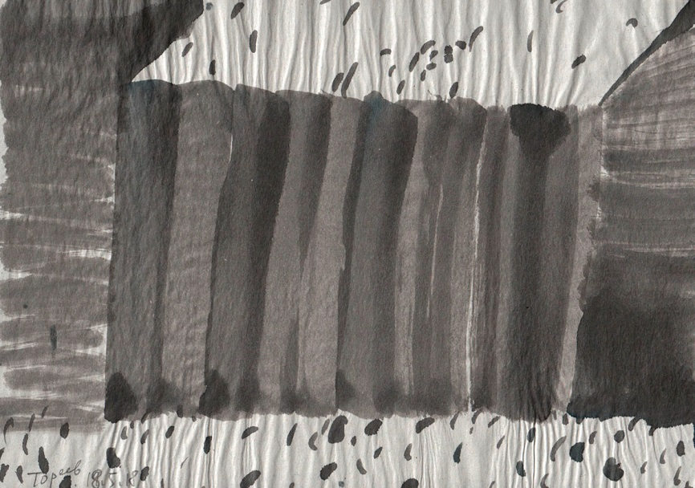

На рисунке видим пятна параболической формы, напоминающие очертания форм деревьев; их величина убывает от первого плана (низа картины) до дальнего (верхнего края). По существу, это фрагмент пейзажа осеннего леса: краски листвы уже блекло-зелёные или красные; земля покрыта опавшей листвой. Чёрные и синие пятна придают пейзажу трагический оттенок: это картина умирания растений (хотя и с перспективой весеннего возрождения).
Романтический пейзаж в серо-чёрной гамме: таинственная пещера глубоко под землёй, с остатками скелетов доисторических животных, камнями немыслимой древности и следами первых рисунков наших мохнатых предков на стенах. Вся эта впечатляющая картина создана лёгкой и быстрой кистью. Художник не утомляет зрителя чрезмерной работой рассматривания деталей, и мы благодарны ему за это.
Эта работа напоминает детский рисунок – и по композиции, и по трактовке пространства, и по технике (если можно назвать техникой свободные движения руки с фломастером над бумагой).
Пространство картины двумерно, глубины здесь нет. У нижнего края листа угадываются беглые наброски каких-то архитектурных сооружений (башен). Верхний край листа покрыт следами кругообразных «каракулей», напоминающих облака. Между «небом» и «землёй» - следы произвольных и непредсказуемых движений руки Художника. Рисунок отличается инфантильностью: думаю, что это одна из обаятельных особенностей графики Юрия Тореева.
26
27
28
Три композиции выполнены аналогичной техникой – быстрым линейным рисунком. В первом (26) угадывается перспектива двойного ряда деревьев; во втором (27) – ряд объектов наподобие фонарей на высоких столбах; третий (28) напоминает скорее группу балерин, исполняющих под музыку некий танец (или рощу молодых деревьев на ветру).
Возникает вопрос: возможно ли создать абсолютно абстрактный рисунок, который бы не ассоциировался с чем-либо реальным и известным? Думаю, что нет. Даже детские каракули на что-то похожи, а тучки – тем более (что доказал нам великий поэт В.Маяковский).
Это тоже пейзаж: вид сверху. На переднем плане – дома, на заднем – дальний лес, или населённый пункт.
Собрание акварельных пятен овальных очертаний весьма напоминает лес. Остаётся только нарисовать под пятнами «стволы» – и абстракция превращается в узнаваемую картину леса.
Здесь запечатлён торжественный момент в истории человечества: восхождение на трон нового владыки. Небожители пляшут и ликуют, народ плотной толпой собрался перед дворцом царя, воздух сотрясается приветственными криками. Но почему так много чёрных пятен на этой картине? Может быть, это напоминание и пророчество: о неизбежной смерти, о тщете всех человеческих усилий, о происках тёмных сил, от которых нет спасения?..
Недаром пышный царский дворец увенчан жирной чёрной полосой, а на переднем плане картины видим бесформенные обломки человеческих надежд, трудов, судеб… Эта работа Юрия Тореева достойна занять место в самом большом Музее Истории Человечества.
В отличие от предыдущего, этот пейзаж вполне будничный. На нём мы видим картинку из нашей повседневной жизни: задние фасады жилых домов и большой мусоросборник, переполненный ёмкостями с отходами нашей жизнедеятельности. Архитектура жилых домов передана небрежно и торопливо – как она того и заслуживает, зато бачки с мусором привлекают внимание своей фактурностью и сочностью красок.
Заметим, что эта работа подписана автором.
Если вы скажете, что не видите на этом рисунке изображения современного большого города с многоэтажными зданиями – я вам не поверю. Художник изобразил не только дома-гиганты, но и «малые формы» во дворе – для детей. Площадь перед зданиями истоптана тысячами ног и покрыта следами сотен машин. Художник со свойственным ему живым воображением нарисовал весь этот хаос пересекающихся следов от машинных колёс и человеческих ног. Можно ли жить человеку в таком городе? Оказывается, можно…
Самый обаятельный пейзаж. Здесь разыгрывается драма стремления к желанной цели – той, которой не суждено достичь никогда. Свидетель драмы – чёрный треугольник – спокойно наблюдает за происходящим: он осуждён на неподвижность, он навечно прикреплён к углу листа. Его роль в композиции – дополнять диаду (круг и столб) до триады, т.к. «Бог троицу любит». Ведь мы знаем: «Два - не число, и никогда числом не будет». Сколько зла произошло в мире от диады! (Уточним на всякий случай – от борьбы противоположностей).
128 (2017)
Не нужно напрягать воображение, чтобы увидеть здесь пейзаж. В этой работе есть всё, что традиционно входит в композицию этого типа. За невысокой ажурной оградой лежит нечто подобное паровозному котлу (видимо, отслужившему свой срок). На заднем плане рисунка просматривается густая поросль высоких трав или кустов.
Настроение картины – «светлая грусть», воспоминания о днях молодости.
135 (2017)
Это пейзаж, нарисованный четырьмя движениями кисти: две прямые линии и две дуги (не считая двух мелких пятен). Пожалуй, это самый абстрактный из всех аналогичных сюжетов. И всё же созерцание этого рисунка вызывает вполне определённые ассоциации: мне видится здесь большое снежное поле, а может быть, река, покрытая льдом. Во льду – длинная прорубь; возле неё – два сугроба, образовавшиеся при очистке от снега перед прорубанием отверстия в ледяном покрове.
Не слишком ли далеко завела меня фантазия? Думаю, что не слишком. Ведь обаяние абстрактных картин (и их смысл) – в стимулировании памяти и воображения зрителя. Перед такой картиной каждый зритель превращается как бы в художника – он интерпретирует зрелище сугубо-индивидуально, в меру своей эрудиции и интуиции.
146 (2018)
Очень интересный пейзаж. В нём угадывается сооружение (стенд) для просушки рыбы. Его можно интерпретировать как ноты: получится пьеса для рояля и контрабаса.

166 (2018)
Этот пейзаж – один из самых натуральных. Непонятно, как он попал в число абстрактных рисунков. Мы видим здесь фрагмент деревенского пейзажа: глухой бревенчатый забор между двумя домами (сараями). Этот забор – непроницаемая преграда между двумя мирами – улицей и двором. Он (забор) – символ и гарантия «кулацкого» духа крестьянина-единоличника. Забор наглядно воплощает идею прочности и справедливости частной собственности на землю (хотя бы на свой двор и огород); он, забор, ясно говорит: мой дом – моя крепость. Он надёжно скрывает от посторонних глаз хозяйское добро, чтобы никто не позарился на него. Может ли быть что-либо более конкретное, чем массивный забор между дворами, людьми, их интересами и имуществом?
171 (2018)
Фантастический пейзаж «В джунглях» (название моё). Сто тысяч мелких штрихов и загадочная фигура справа (человекоподобная). Резкий контраст чёрных пятен и белого фона. Такой пейзаж может присниться в страшном сне.
176 (2018)
Так будет выглядеть наш земной мир в свой последний день, когда все сооружения и предметы потеряют свой первоначальный облик, а небо и земля сольются в предсмертном объятии. О погибшем человечестве будет напоминать только одна голова. В глазах её застыл ужас и невольный вопрос: «За что?...»

184 (2018)
В этот дремучий и сумрачный лес можно войти (хотя я не советую), но выйти – нельзя. В таком лесу, наверное, погибли польские воины, заведенные сюда Иваном Сусаниным. Воображаю, какое настроение владело Художником, когда он рисовал эту картину, не жалея чёрной краски. (Такое же настроение было, наверное, у юнкера Шмидта, когда он хотел из пистолета застрелиться).
195 (2018)
В этом пейзаже есть как будто всё, что привычно видеть в нашей стране: зелёный луг, речка синяя (как в песне), земля цвета охры и корицы… Однако, Художник правдив во всём; он не ищет гармонии в природе. Он знает, что здесь «от добра неотделимо зло» (Н. Заболоцкий). Это мы чувствуем, глядя на большие пятна в верхней части картины – тёмно-зелёные, тёмно-коричневые, чёрные… Принято считать, что оптимизм лучше пессимизма, но ведь недаром сказано: «Сетование лучше смеха; потому что при печали лица сердце делается лучше» (Екклезиаст 7 :3).
229 (2018)
Здесь ясно различаются три объекта гражданского или культового назначения. Например: административное здание, протестантский храм, или купол христианской церкви. При желании можно увидеть в них банку, колбу и бутыль (слева направо). Этот рисунок может служить тестом на эрудицию зрителя в области архитектуры, домашнего хозяйства, или теории композиции.
260 (2017)
Картина называется «Лес». Она конкретнее всех. Здесь изображён нарядный осенний лес в красно-зелёной гамме с чёрно-белыми вкраплениями. Если бы не чёрные пятна – мы поверили бы, что у Художника наконец появилось хорошее настроение и здоровый оптимизм. Увы, это не так. Природа не вызывает у Ю. Тореева чувства восторга. В этом он не одинок. Ведь сказал Поэт: «Я не ищу гармонии в природе…». Ведь в ней «от добра неотделимо зло».
Такова диалектика. «Тут уж, будь хоть сам Гюго – не попишешь ничего».
Хочется посоветовать Юрию Александровичу перечитать М.Пришвина.
Л. Миронова,
26.08.2018